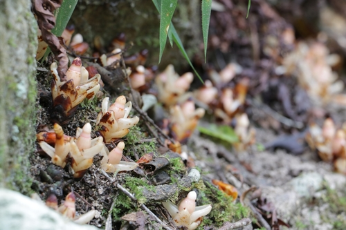

Mitrastemonaceae
(No widely accepted common name)
Mitrastemonaceae is a highly unusual family of flowering plants containing the single genus Mitrastemon, with only two known species. These plants are obligate holoparasites, meaning they completely lack chlorophyll and derive all nutrients by parasitizing the roots of host trees, primarily Fagaceae (oaks, beeches). Found in disjunct regions of Southeast Asia, Malesia, Central America, and northern South America, they belong to the order Ericales. They are remarkable for their extremely reduced vegetative body, unique floral structure (especially the fused stamens forming a tube), and emergence directly from host roots.
Overview
The Mitrastemonaceae family consists of just two species in the genus Mitrastemon: M. yamamotoi (Asia) and M. matudae (Americas). These are achlorophyllous (lacking chlorophyll) root holoparasites. They spend most of their life cycle as an endophytic system within the host roots, with only the flowers and fruits emerging above ground.
Their phylogenetic placement was long uncertain due to their highly modified morphology, but molecular data firmly places them within the large and diverse order Ericales. They represent an extreme example of adaptation to a parasitic lifestyle, with significant reduction of vegetative structures and unique modifications of reproductive parts.
The flowers emerge directly from the host roots, appearing somewhat fungus-like. They possess a unique floral structure where the numerous stamens are fused into a tube (synandrium) enclosing the ovary, and the single whorl of perianth falls off like a cap. Their disjunct distribution across the Pacific suggests either ancient origins and vicariance or long-distance dispersal events.
Quick Facts
- Scientific Name: Mitrastemonaceae Makino
- Common Name: (None widely used)
- Number of Genera: 1 (Mitrastemon)
- Number of Species: 2
- Distribution: Disjunct: SE Asia, Malesia; Central America, N South America
- Evolutionary Group: Eudicots - Asterids - Ericales
Key Characteristics
Growth Form and Habit
Achlorophyllous, holoparasitic herbs parasitizing roots (primarily Fagaceae). Vegetative body extremely reduced, endophytic within host roots. Only reproductive structures (flowers, fruits) emerge above ground.
Leaves
Leaves are absent or reduced to scale-like structures, typically opposite, arranged on the short emergent flowering shoot below the flower.
Inflorescence
Flowers are typically solitary, emerging directly from the host root, subtended by scale-like bracts.
Flowers
Flowers are bisexual, actinomorphic (radially symmetrical), relatively large, and often cream-colored or yellowish. Key unique features include:
- Perianth: A single whorl of fused tepals forming a cup-like structure (calyptra), which is circumscissilely dehiscent (falls off as a unit or cap) as the flower opens.
- Androecium: Stamens numerous, filaments completely fused into a tube (synandrium) that surrounds the gynoecium. Anthers are extrorse (opening outwards), fused laterally, dehiscing by longitudinal slits.
- Gynoecium: Ovary is superior, unilocular (one chamber) but with numerous intrusive parietal placentas bearing very numerous, tiny ovules. Style is single, short, with a capitate or discoid stigma.
- Nectar: Nectar is secreted from the base of the ovary or the inner base of the synandrium.
Fruits and Seeds
The fruit is a fleshy berry or capsule-like structure containing very numerous, minute seeds. Dispersal mechanisms are not well understood but may involve small animals or water.
Chemical Characteristics
As holoparasites lacking photosynthesis, their metabolism is entirely dependent on the host. Specific chemical compounds unique to the family are not well characterized, but their composition likely reflects derived compounds from the host.
Field Identification
Identifying Mitrastemonaceae requires finding the distinctive flowers emerging directly from the ground near or attached to the roots of host trees (especially Fagaceae) in their specific geographic ranges.
Primary Identification Features
- Habit: Holoparasitic; only flowers/fruits visible above ground, emerging from host roots.
- Host Association: Typically found parasitizing roots of Fagaceae (oaks, beeches, etc.).
- Flowers: Solitary, relatively large, whitish/cream, fungus-like appearance initially.
- Perianth: Falls off as a cap (circumscissile calyptra).
- Stamens: Fused into a prominent tube (synandrium) around the style.
- Distribution: Disjunct tropical/subtropical regions (SE Asia/Malesia and Neotropics).
Secondary Identification Features
- Lack of Green Parts: No chlorophyll present.
- Scale Leaves: Small scale-like bracts below the flower.
- Ovary: Superior, unilocular with numerous ovules.
Seasonal Identification Tips
- Flowering Season: Varies by region, often after rainy periods when host trees are active. The emergent flowers are the primary means of detection.
- Fruiting Season: Fruits develop after flowering, containing numerous tiny seeds.
- Non-flowering Periods: The plant is entirely endophytic and invisible above ground.
Common Confusion Points
- Fungi: The emergent flowers can strongly resemble certain types of fleshy fungi pushing up through the soil. Careful examination reveals the floral structure (synandrium, ovary).
- Other Root Parasites (e.g., Balanophoraceae, Rafflesiaceae): While also holoparasitic, these families differ significantly in floral structure. Balanophoraceae often have dense, club-like inflorescences. Rafflesiaceae (including Rafflesia, Sapria) have vastly different flower structures (e.g., huge flowers in Rafflesia, unisexual flowers, different stamen/ovary arrangements) and are primarily stem/root parasites on vines (Tetrastigma). Mitrastemonaceae is unique in its combination of circumscissile perianth, synandrium, and superior ovary.
Field Guide Quick Reference
Look For:
- Holoparasite emerging from host roots (esp. Fagaceae)
- No green parts
- Solitary, whitish/cream flowers
- Perianth falling as a cap
- Stamens fused into a tube (synandrium)
- Superior ovary
- Disjunct tropical distribution
Key Variations:
- (Only 2 species, variations are minor between them)
- Flower size
- Host species within Fagaceae
Notable Examples
The family contains only the genus Mitrastemon with two species:

Mitrastemon yamamotoi
(Asian Mitrastemon)
Found in Southeast Asia (including Japan, Taiwan) and Malesia. It parasitizes the roots of various Fagaceae species. This is the type species for the genus.

Mitrastemon matudae
(American Mitrastemon)
Found in Central America (Mexico to Guatemala) and northern South America (Colombia). It also primarily parasitizes Fagaceae roots (oaks). Morphologically very similar to M. yamamotoi.
Phylogeny and Classification
Mitrastemonaceae is placed in the large order Ericales, within the Asterid clade of eudicots. Its position within Ericales was uncertain for a long time due to its highly derived parasitic morphology obscuring typical characteristics.
Molecular phylogenetic studies have robustly placed Mitrastemonaceae within Ericales, often showing a relationship near families like Theaceae (tea family) or Pentaphylacaceae, although its exact sister group remains an area of active research. It represents a fascinating example of extreme morphological modification associated with a holoparasitic lifestyle within a predominantly non-parasitic order.
Position in Plant Phylogeny
- Kingdom: Plantae
- Clade: Angiosperms (Flowering plants)
- Clade: Eudicots
- Clade: Asterids
- Order: Ericales
- Family: Mitrastemonaceae
Evolutionary Significance
Mitrastemonaceae offers unique insights into plant evolution:
- Extreme Parasitic Adaptation: Demonstrates the extent of morphological and physiological changes associated with obligate holoparasitism.
- Convergent Evolution: Shares features with other unrelated holoparasites (e.g., lack of chlorophyll, reduced vegetative body) due to similar selective pressures.
- Phylogenetic Anchor: Its placement within Ericales helps understand the evolutionary potential and constraints within this large order.
- Biogeography: The striking disjunction between Asian and American species poses intriguing questions about ancient connections or long-distance dispersal mechanisms for such a specialized parasite.
- Unique Floral Morphology: The synandrium and circumscissile perianth are highly unusual structures within angiosperms.